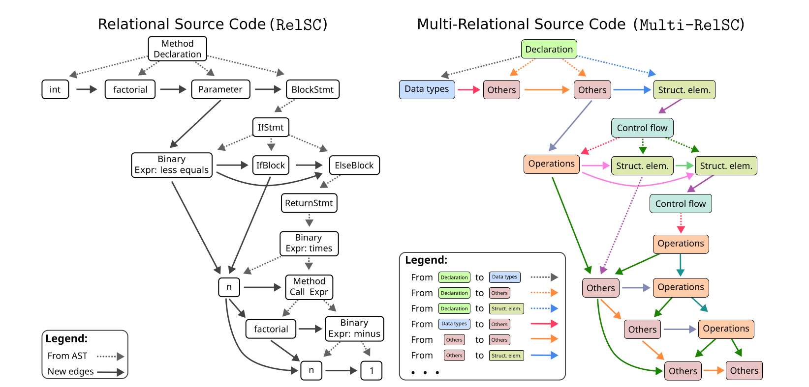
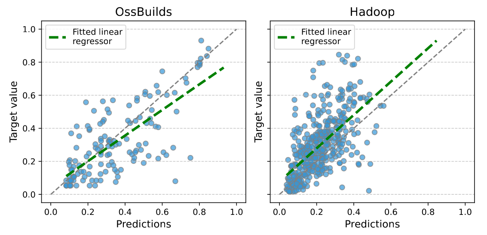

Graph Regression for Software Performance: RelSC Benchmarks for Runtime Prediction
RelSC turns Java source code into program graphs and uses execution time as a continuous target, creating a benchmark for graph regression beyond the usual molecular and citation-network settings.
The problem
Graph Neural Networks (GNNs) are widely used for graph-structured data, but graph-level regression benchmarks are still concentrated in a small set of domains, especially molecular property prediction. This makes it harder to evaluate whether models can handle other kinds of graphs, targets, and structural signals.
Software performance prediction is a useful stress test for graph regression. A Java program is not just a sequence of tokens: it has syntax, control flow, and data dependencies. Its execution time depends on these interacting structures, so predicting runtime from source code is naturally a graph-level regression problem.
The key idea in RelSC is simple: represent each Java test file as a graph and label the graph with the measured execution time of that file. The resulting task asks a model to predict a continuous runtime target from the structure and semantics of code.
Why this matters
Early estimates of execution time can support code optimization, refactoring decisions, and performance regression analysis. The paper does not propose a new model architecture. Instead, it provides benchmark datasets and baseline results so that researchers can test graph regression methods on software graphs with realistic structure.
How the graph is constructed
The construction starts from an Abstract Syntax Tree (AST), which captures the syntactic structure of a Java source file. The AST is parsed with javalang, which assigns nodes to predefined Java syntax categories. The tree is then converted into a directed graph from parent nodes to child nodes.
RelSC enriches this syntax graph with edges inspired by Control Flow Graphs (CFGs) and Data Flow Graphs (DFGs). These added edges encode relationships such as next token, next sibling, next use, if and else flow, loop execution flow, loop back edges, and next statement flow. The goal is to expose execution-relevant structure that a plain AST does not contain.

The benchmark is released in two complementary variants. RelSC-H is the homogeneous version: it uses a single edge type and represents nodes with semantic node-type features and summarized outgoing-edge information. RelSC-M is the multi-relational version: it groups nodes into seven categories, including declarations, data types, control flow, operations, structural elements, exceptions and errors, and others, and defines relation types between these categories.
This design makes it possible to compare two choices that often matter in graph learning: a compact homogeneous representation and a richer multi-relational representation. In RelSC-M, the construction can produce up to 49 relation types.
What data is included
The paper builds RelSC from Java test files paired with execution-time measurements. It uses two sources. OssBuilds contains 922 files from four open-source projects: SystemDS, H2, Dubbo, and RDF4J. HadoopTests contains 2,895 Hadoop unit-test files, each executed five times in a controlled environment.
The resulting graphs are large enough to be challenging. For example, Hadoop graphs average about 1,490 nodes. The multi-relational version contains more edges than the homogeneous version because it preserves richer relational structure.
Preliminary results
The experiments compare source-code, AST-based, homogeneous GNN, and heterogeneous GNN baselines. The evaluation uses normalized execution-time targets and Mean Absolute Error (MAE), with lower values indicating better predictions. The dataset split is 70% training, 15% validation, and 15% test.
On RelSC-H, graph-based models generally outperform the source-code and AST baselines. Principal Neighbourhood Aggregation (PNA) gives the best MAE across the reported RelSC-H datasets, including Hadoop, RDF4J, SystemDS, H2, Dubbo, and the combined OssBuilds dataset.
The multi-relational setting is more difficult. HeteroGAT and HeteroTransformer are among the strongest heterogeneous baselines, but the results also show instability on smaller projects. In particular, HeteroSAGE has high run-to-run variability on some RelSC-M subsets. This suggests that relation-rich program graphs are useful as a robustness test, not only as a performance benchmark.

A notable finding is that RelSC-H baselines outperform RelSC-M baselines in the reported experiments, even though RelSC-M carries more explicit relation information. This does not mean that relation types are unhelpful. Rather, it shows that off-the-shelf heterogeneous GNNs do not automatically exploit this structure reliably for software execution-time prediction.
Main takeaway
RelSC expands graph regression benchmarking into software engineering. It provides directed, semantics-enriched program graphs with continuous execution-time labels, together with homogeneous and multi-relational variants. The preliminary results show that graph structure helps, but also that multi-relational runtime prediction remains challenging.
For researchers, the benchmark is valuable because it separates two questions: how well a model predicts execution time from program structure, and how robustly it can use relation types when the graph is multi-relational and the dataset is not enormous.
Key references
- Samoaa, Vukojevic, Haghir Chehreghani, and Longa. A Benchmark Dataset for Graph Regression with Homogeneous and Multi-Relational Variants. Journal of Data-centric Machine Learning Research, 2025. Paper PDF.
- Dataset and code repository: graph_regression_datasets on GitHub.
- Video overview: YouTube presentation.
- Scarselli et al. (2008) and Micheli (2009) introduced early Graph Neural Network formulations; Gilmer et al. (2017) formalized neural message passing.
- Allamanis, Brockschmidt, and Khademi (2018) showed how graph representations can support learning over programs.
- Alon et al. (2019) introduced Code2Vec, and Feng et al. (2020) introduced CodeBERT, two non-GNN baselines used for source-code representation.
- Kipf and Welling (2017), Hamilton et al. (2017), Velickovic et al. (2018), Xu et al. (2019), and Corso et al. (2020) provide key GNN architectures evaluated or discussed in relation to the benchmark.
- Schlichtkrull et al. (2018) introduced Relational Graph Convolutional Networks, a central reference for multi-relational GNN modeling.
Source note
This page summarizes A Benchmark Dataset for Graph Regression with Homogeneous and Multi-Relational Variants, by Peter Samoaa, Marcus Vukojevic, Morteza Haghir Chehreghani, and Antonio Longa, published in the Journal of Data-centric Machine Learning Research in 2025 and reviewed on OpenReview.